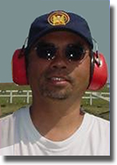

Here is a series of articles by Master Bullseye Pistol shooter and highly successful Optometrist, Dr. Norman H. Wong, O.D. I have not met anyone who has not learned a lot from the writings of Dr. Wong, on a topic of particular importance to competitive shooting.